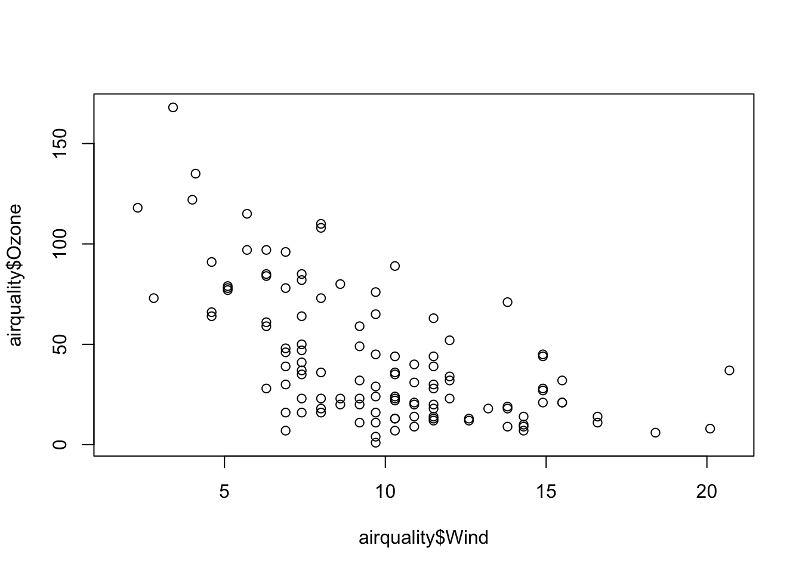
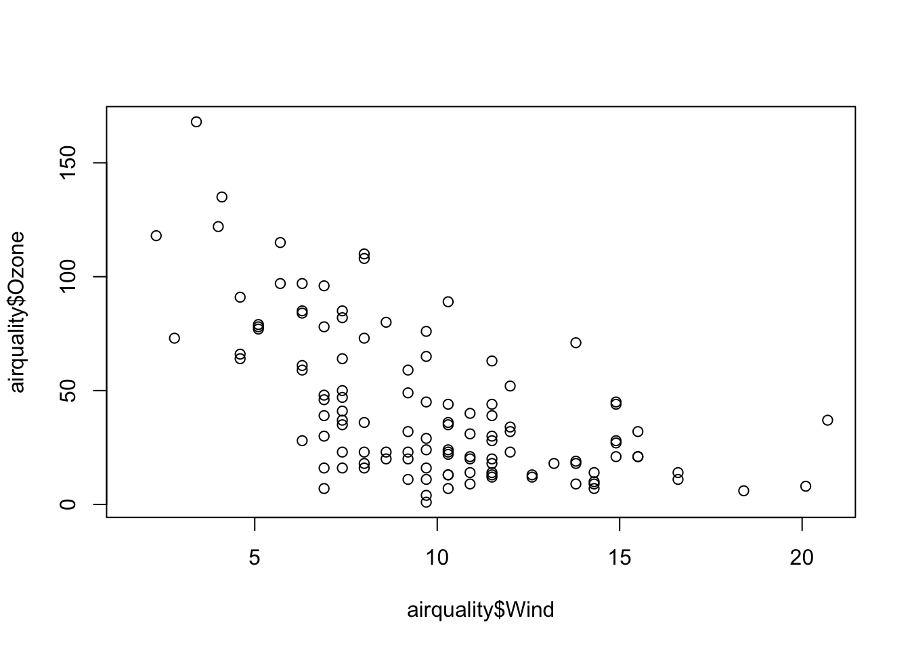
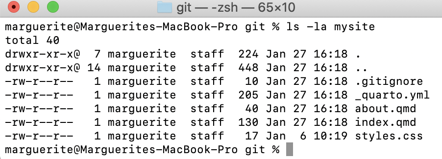
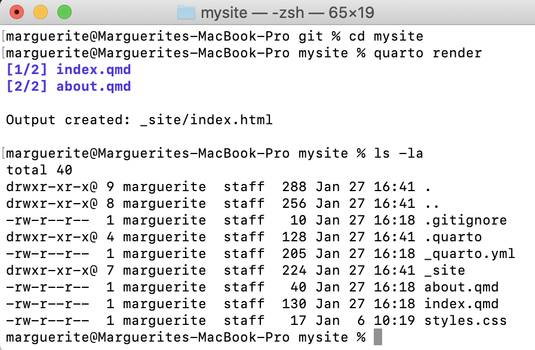
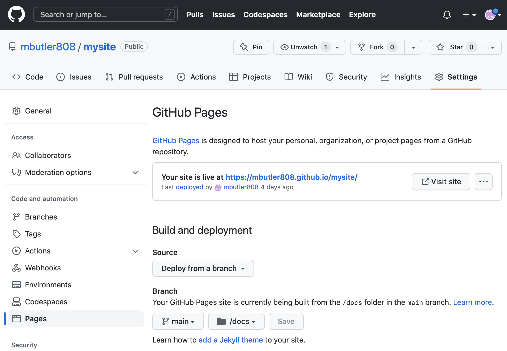

data(airquality)
plot(airquality$Ozone ~ airquality$Wind)
Before class, you can prepare by reading the following materials:
Material for this lecture was borrowed and adopted from
At the end of this lesson you will:
Before there was widespread concern about “Reproducible Research”, the term literate programming was coined by Donald Knuth, one of the true geniuses of computing, the author/inventor of TeX, and the notion of structured programming, among other things. He wrote a book about it in 1984!
Literate programming is a methodology that combines a programming language with a documentation language, thereby making programs more robust, more portable, more easily maintained, and arguably more fun to write than programs that are written only in a high-level language.
The main idea is to treat a program as a piece of literature, addressed to human beings rather than to a computer. The program is also viewed as a hypertext document, rather like the World Wide Web. (Indeed, I used the word WEB for this purpose long before CERN grabbed it!) —Donald Knuth
The basic idea is that:
These concepts were baked into the R help pages. You will see that there are working code examples for every single function in R at the bottom of each help page. In fact it is required before a package will be published on CRAN.
The basic issue is when you read a description of a data analysis, such as in an article or a technical report, for the most part, what you get is the report and nothing else.
Of course, everyone knows that behind the scenes there’s a lot that went into this article and that is what I call the data science pipeline.

One basic idea to make writing reproducible reports easier is what’s known as literate statistical programming. The idea is to think of a report or a publication as a stream of text and code.
The text is readable by people and the code is readable by computers.
The analysis is described in a series of text and code chunks.
Each kind of code chunk will do something like load some data or compute some results.
Each text chunk will relay something in a human readable language.
The code and text remain together in a single source document. No more separate analysis files and word processing files. When code is edited, the report is automatically generated and updated.
There might also be presentation code that formats tables and figures and there’s article text that explains what’s going on around all this code. This stream of text and code is a literate statistical program or a literate statistical analysis.
Literate programs by themselves are a bit difficult to work with, but they can be processed in two important ways.
Literate programs can be weaved to produce human readable documents like PDFs or HTML web pages, and they can tangled to produce machine-readable “documents”, or in other words, machine readable code.
In order to use a system like this you need a documentational language, that’s human readable, and you need a programming language that’s machine readable (or can be compiled/interpreted into something that’s machine readable).
One of the original literate programming systems in R that was designed to do this was called Sweave written by Friedrich Leisch. Sweave enables users to combine R code with a documentation program called LaTeX. Sweave revolutionized coding, and has become part of the R base code. Leisch is on the R Core Development Team and the BioConductor Project.
Sweave files ends a .Rnw and have R code weaved through the document:
<<plot1, height=4, width=5, eval=FALSE>>=
data(airquality)
plot(airquality$Ozone ~ airquality$Wind)
@Once you have created your .Rnw file, Sweave will process the file, executing the R chunks and replacing them with output as appropriate before creating the PDF document.
Sweaveʻs main limitation is that it requires knowledge of LaTeX
Instead, folks have moved towards using something called knitr, which offers everything Sweave does, plus it extends it to much simpler Markdown documents.
Another choice for literate programming is to build documents based on Markdown language. A markdown file is a plain text file that is typically given the extension .md. The rmarkdown R package takes a R Markdown file (.Rmd) and weaves together R code chunks Figure 1, producing a large number of user-specified outputs.

R chunks surrounded by text looks like this:
```{r plot1, height=4, width=5, eval=FALSE, echo=TRUE}
data(airquality)
plot(airquality$Ozone ~ airquality$Wind)
```The best resource for learning about R Markdown this by Yihui Xie, J. J. Allaire, and Garrett Grolemund:
The R Markdown Cookbook by Yihui Xie, Christophe Dervieux, and Emily Riederer is really good too:
The authors of the 2nd book describe the motivation for the 2nd book as:
“However, we have received comments from our readers and publisher that it would be beneficial to provide more practical and relatively short examples to show the interesting and useful usage of R Markdown, because it can be daunting to find out how to achieve a certain task from the aforementioned reference book (put another way, that book is too dry to read). As a result, this cookbook was born.”
Because this is lecture is built in a .qmd file (which is very similar to a .Rmd file), let’s demonstrate how this work. I am going to change eval=FALSE to eval=TRUE.
data(airquality)
plot(airquality$Ozone ~ airquality$Wind)
Before we leave this section, I find that there is quite a bit of terminology to understand the magic behind rmarkdown that can be confusing, so let’s break it down:
pandoc..md. It is completely independent from R..Rmd.rmarkdown (R package). The R package rmarkdown is a library that uses pandoc to process and convert text and R code written in .Rmd files into a number of different formats. This core function is rmarkdown::render(). Note: this package only deals with the markdown language. If the input file is e.g. .Rhtml or .Rnw, then you need to use knitr prior to calling pandoc (see below).Check out the R Markdown Quick Tour for more:

One of the alternative that has come up in recent times is something called knitr.
knitr package for R takes a lot of these ideas of literate programming and updates and improves upon them.knitr still uses R as its programming language, but it allows you to mix other programming languages in.knitr was developed by Yihui Xie while he was a graduate student at Iowa State and it has become a very popular package for writing literate statistical programs.Knitr takes a plain text document with embedded code, executes the code and ‘knits’ the results back into the document.
For for example, it converts
.Rmd) file into a standard markdown file (.md).Rnw (Sweave) file into to .tex format..Rhtml file into to .html.The core function is knitr::knit() and by default this will look at the input document and try and guess what type it is e.g. Rnw, Rmd etc.
This core function performs three roles:
.Rmd, the output render marks up the output of code evaluation in .md format.
[Source]
As seen in the figure above, from there pandoc is used to convert e.g. a .md file into many other types of file formats into a .html, etc.
So in summary:
“R Markdown stands on the shoulders of knitr and Pandoc. The former executes the computer code embedded in Markdown, and converts R Markdown to Markdown. The latter renders Markdown to the output format you want (such as PDF, HTML, Word, and so on).”
[Source]
The folks who developed R Markdown have moved on to a new package called Quarto. Quarto contains many of the features of R Markdown, but importantly, is now separate from Rstudio. It is intentionally developed as a cross-platform, cross-language markup language. It works with R, Python, Julia, and Observable. And is rapidly catching on with the statistical coding community.
Quarto can render output to many formats of documents including html, pdf, docx, md. It can also layout websites, presentations, or even books. It supports interactive apps such as Rshiny among other things.
We are going to learn using Quarto. Letʻs start by getting a simple webpage up. Conceptually, there are three tasks:
In this section, I am adding a bit more explanation to the Quarto quickstart guide up to and including Render. If something is not clear, please consult https://quarto.org/docs/websites/
There are three main quarto commands we will use:
quarto create-project: Make a website project templatequarto preview: Take a look at what the webite will look likequarto render: Render your qmd to htmlCreate your website (here called mysite) using the following command. It will make a directory of the same name and put the website contents within it.
Terminal
quarto create-project mysite --type websiteYou should now see the following files in your mysite directory (Figure 2):

This is the bare-bones version of your website. Check that the code is functional by looking at a preview:
Terminal
quarto previewThis should open up a browser window showing a temporary file made by quarto by rendering your website files.
quarto preview will refresh the preview every time you save your index.qmd (or any) website files. So itʻs a good idea to keep the preview open as you make edits and saves.quarto preview with Control-cUse quarto to render your content to html, the format used by browsers. First navigate into your website directory then render:
Terminal
cd mysite
quarto renderTake a look at the mysite contents after rendering, you should see a new directory _site (Figure 3). The html was rendered and put in there (go ahead, open up the files and check it out):

What is really nice is that you can personalize your website by simply editing the quarto markdown and yaml files.
.qmdUsing any text editor, edit the index.qmd to personalize your website.
The first section of your index.qmd is the header. You can change the title and add additional header information, including any cover images and website templates.
For example this is what I have in my course website index.qmd header. Note that my cover image is in a folder called images within at the top level of my website directory. If you want to try this out substitute or remove the image line and change the twitter/github handles.
index.qmd
---
title: "Welcome to Introduction to Data Science in R for Biologists!"
image: images/mycoolimage.png
about:
template: jolla
links:
- icon: twitter
text: Twitter
href: https://twitter.com/mbutler808
- icon: github
text: Github
href: https://github.com/mbutler808
---You should edit the body of your website as well. You simply edit the text.
The quarto markdown page has great examples showing how to format your content. Take a look at how to specify header sizes, lists, figures and tables.
Try editing the about.qmd file as well. You will notice that this is another tab in your website. YOu can add more tabs by adding .qmd files.
With each addition, be sure to quarto preview your changes to make sure it works. When you are satisfied with your website, quarto render to render to html.
[This is a cool link](http://mycoollink.com)_quarto.ymlAll Quarto projects include a _quarto.yml configuration file that sets the global options that apply across the entire website.
YAML started off as “Yet Another Markup Language” 😜. It is clean, clear, and widely used. You can edit your YAML to add options or change the format of your website. Take a look at your _quarto.yml.
Here is an example for a simple website. title: is the parameter to set the websiteʻs title. navbar: sets the menu, in this case on the left sidebar. By default tabs will be named based on the names of the .qmd files, but you can set them manually. There are many themes you can choose from too, check them out. For something different try cyborg.
_quarto.yml
project:
type: website
website:
title: "today"
navbar:
left:
- href: index.qmd
text: Home
- about.qmd
format:
html:
theme: minty
css: styles.css
toc: trueAgain, after saving your edits, quarto preview to see the effects. When you are satisfied with your website, quarto render to render to html.
Terminal
quarto renderYou can publish your website for free on GitHub, which is a very cool feature. In his section I am adding a bit more explanation to the Quarto quickstart guide up to and including Render to docs https://quarto.org/docs/publishing/github-pages.html. I describe the most important stpes below:
docs directoryjekyll html processing by creating a .nojekyll filedocsEdit the _quarto.yml file at the top level of your website to send output to docs. This will also create the docs folder.
_quarto.yml
project:
type: website
output-dir: docsThe next time you quarto render it will create docs and all of its contents.
jekyll html processingGitHub uses a sofware called jekyll to render html from markdown. Since weʻre using quarto, we want to supress that. Create an empty file named .nojekyll at the top level of your website directory to supress default jekyll processing.
| Mac/Linux | Terminal |
| Windows | Terminal |
Terminal
git init
git add .
git commit -m "first commit"For example, mine might be github.com/mbutler808/mysite.
If you forgot how to do this, go back here
Almost there! A couple more steps.
From your GitHub repo, click on Settings in the top menu, and Pages on the left menu.
Your website should deploy from branch. Under Select branch choose main and under Select folder choose docs.
After clicking save GitHub will trigger a deployment of your website. After a few minutes, your URL will appear near the top at Your site is live at...:

Congratulations! ⚡️ Your website is now live 🎉🎊😍
quarto preview to check that edits are correctquarto render to render .qmd to .htmlgit add .git commit -m "message"git push origin mainYou can have fun with emoji! Guangchuang Yu wrote the package emojifont (this is the same person who wrote the widely used ggtree package) and now you can bring your emoji out of your phone and into your quarto documents! Install the R package emojifont:
install.packages("emojifont")Then anywhere you want an emoji in the markdown file, you just type:
`r emojifont::emoji('palm_tree')`🌴
Or if you want several, just line them up:
`r emojifont::emoji('balloon')``r emojifont::emoji('tada')``r emojifont::emoji('smiley')`🎈🎉😃
There is a handy cheat sheet of emoji names here https://gist.github.com/rxaviers/7360908
quarto render before you push up your changes to GitHub!quarto preview and check that your changes appear in the preview. Then quarto render before you use git to add, commit, and pushPlease see Stephanie Hicksʻ lecture for more literate programming examples and tips.
Here are some post-lecture questions to help you think about the material discussed.
What is literate programming?
What was the first literate statistical programming tool to weave together a statistical language (R) with a markup language (LaTeX)?
What is knitr and how is different than other literate statistical programming tools?
Where can you find a list of other commands that help make your code writing more efficient when using Quarto?